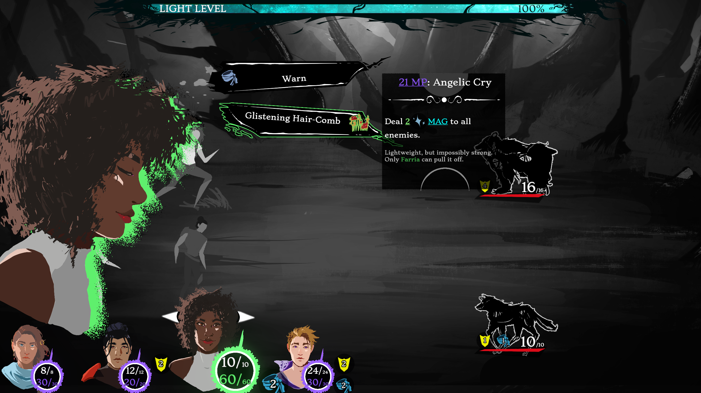
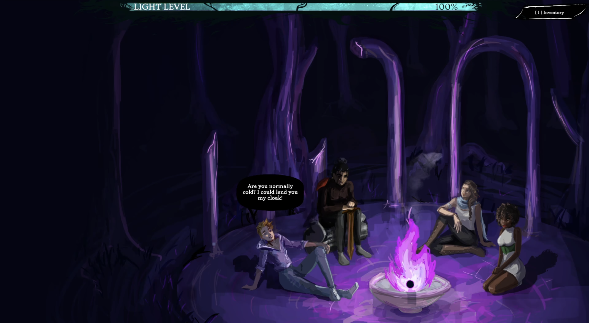
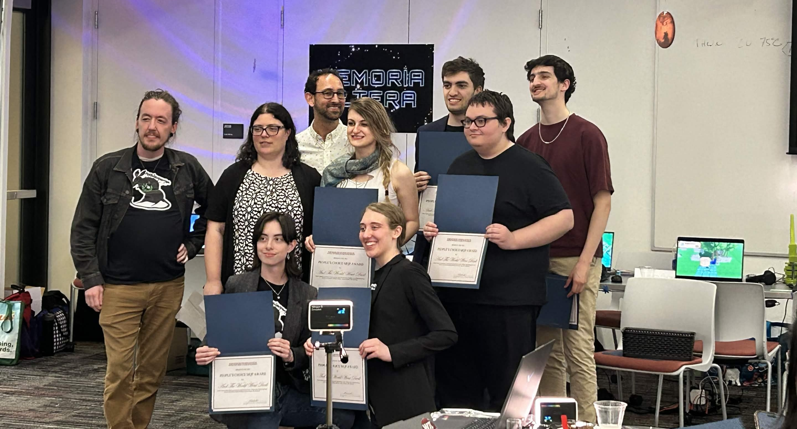
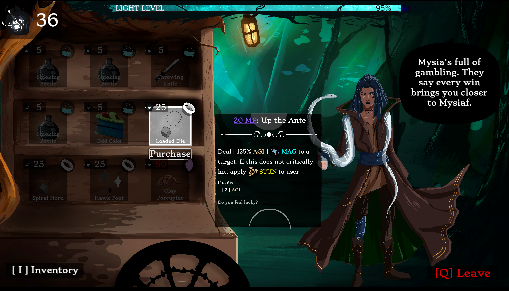
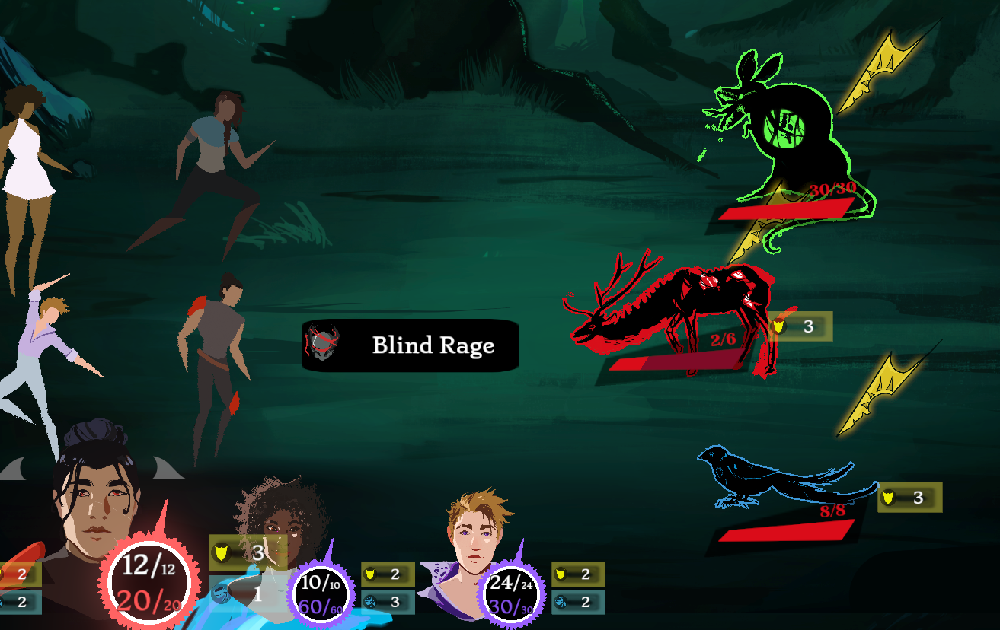
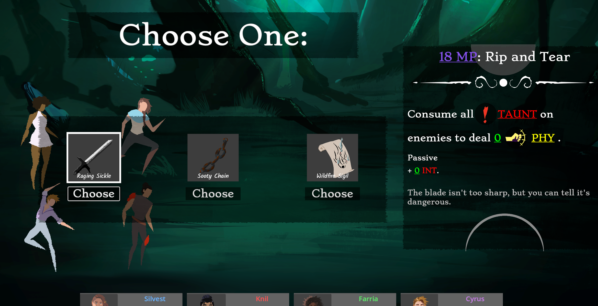
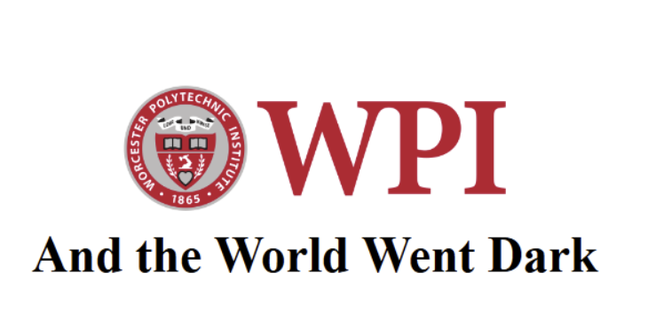

<!DOCTYPE html>

<link rel = 'stylesheet' href='../style.css'>

<!-- Icon Links -->
<link rel="stylesheet" href="https://cdnjs.cloudflare.com/ajax/libs/font-awesome/4.7.0/css/font-awesome.min.css">
<script src="https://cdn.jsdelivr.net/npm/bootstrap@4.6.2/dist/js/bootstrap.bundle.min.js"></script>

<!-- This is the page tab information! (What shows on the browwser for the page window!)-->
<html>
    <head>
        <meta charset="utf-8">
        <meta http-equiv="X-UA-Compatible" content="IE=edge">
        <title>And The World Went Dark</title>
        <meta name="description" content="The portfolio of Bashar Alqassar: ">
        <meta name="viewport" content="width=device-width, initial-scale=1">
        <link rel="stylesheet" href="">
    </head>
    <body>        
        <script src="" async defer></script>
    </body>
</html>


<!-- Overide for custom background image!-->
<body>

<style>
    body {
        background-image: url("../Images/Backgrounds/AndTheWorldWentDarkBG.png");
        background-repeat: no-repeat;
        background-size: cover;
        background-attachment: fixed;
    }

    /*Gradient Components*/
    .topnav, .home-showcase-video, .tool-card, .subpage-text-body, .accordian-content, 
    .accordian-button, .general-image, footer, iframe, .home-showcase-video, .project-card-image, .view-more-button
    {
        background: linear-gradient(-45deg, #a000a084 0%, #5c058fba 100% );
        box-shadow: 0 0 5px 5px rgba(157, 0, 255, 0.402);
    }


    /*Non-Filter Hover*/
    .tool-card:hover, .topnav a:hover, .view-more-button:hover, .accordian-holder:hover, .accordian-button:hover,
    .home-showcase-video:hover, .project-card-image:hover, .general-image:hover 
    {
        filter: none;
        background: linear-gradient(-45deg, #ff00ff84 0%, #a200ffba 100% );
        box-shadow: 0 0 10px 10px rgb(255, 0, 200);

    }


    alt-text
    {
        color: rgb(255, 86, 218);
        text-shadow: 0 0 5px rgb(130, 0, 45)
    }

</style>

    
<!-- Sticky Header Bar, read from right to left on the page-->
    <div id="navbar" class="topnav">
       

        <a class="active" href="../index.html">
            </img>
            Home
        </a>

        <a class="active" href="../index.html#AboutMe">
            </img>
            About Me
        </a>

        <a class="active" href="../Pages/all_projects.html" target="_blank">
            </img>
            Projects
        </a>
        
        <a class="active" href="../Pages/resume_view.html" target="_blank" rel="noopener noreferrer">
            </img>
            Resume
        </a>

        <a href="javascript:void(0);" onclick="show_collapsed()" class="navbar-dropdown">
            </img>
        </a>


        <script>
            function show_collapsed()
            {
                var navbar = document.getElementById("navbar");
                var show_hide_btn_icon = document.getElementById("navbar_showhide");

                console.log(navbar)

                if (navbar.className === "topnav") 
                {
                    navbar.className += " responsive";
                    show_hide_btn_icon.src = "../Icons/x-square.svg";
                    
                } else 
                {
                    navbar.className = "topnav";
                    show_hide_btn_icon.src = "../Icons/menu.svg";
                }
                console.log(navbar)
            }
        </script>       

    </div>

<!-- End of Navbar Template-->


<!-- Start of subpage template!!! (Fill content here!)-->


<div class="subpage-header-content">
    <div class="subpage-header-holder">
        <div class="subpage-text-body" style="width: 400px;">

            <p style="margin: 0px;">
                <alt-text>Role: </alt-text>Gameplay Programmer<br>
                <alt-text>Platform: </alt-text>Desktop <br>
                <alt-text>Team Size: </alt-text>6-12<br>
                <alt-text>Duration: </alt-text>9 Months <br>
                <alt-text>Contributions: </alt-text>
                <ul style="margin-top: 0px;">
                <li>Turn-Based Combat System </li>
                <li>Deterministic RNG </li>
                <li>Item/Action Data Pipeline </li>
                <li>Shader Art </li>
                </ul>
            </p>
            <!-- Project Key Tools used -->
            <div class="tool-card-holder" type="inside-text">

                    <div class="tool-card" type="small">
                        </img>
                        <a class="tool-card-text" color="white">Godot</a>
                    </div>
                    <div class="tool-card" type="small">
                        </img>
                        <a class="tool-card-text" color="white">Git</a>
                    </div>
                    <div class="tool-card" type="small">
                        </img>
                        <a class="tool-card-text" color="white">GD Script</a>
                    </div>


            </div>
        </div>
    </div>
        
    <!-- Autoplay Video Widget -->
    <div class="subpage-header-holder">
        <iframe controls="" class="home-showcase-video" src="https://www.youtube.com/embed/_28ec91Xk8o?si=iLmDZn4i4ekCSnEy?start=0&amp;loop=1&amp;autoplay=1&amp;mute=1&amp;" allow="accelerometer; autoplay; clipboard-write; encrypted-media; gyroscope; picture-in-picture; web-share" allowfullscreen="">
        </iframe>
    </div>

</div>


<div class="subpage-header-content" style="column-gap: 100px;">

    <!-- Project Description Intro -->

    <div class="subpage-header-holder">

        <div class="subpage-text-body" style="width: 400px;">
            

            <p style="margin: 0px;">
                <a class="subpage-text-body-topic">About</a>
                <br>
                <br>

                    <alt-text>And The World Went Dark</alt-text> is a turn-based RPG Rougelike similar to Slay the Spire
                    combined with action-RPG and story elements seen in games like Deltarune. 
                <br>
                <br>
                    This game was my <alt-text>Major Qualifying Project (MQP) for my Senior Year of college</alt-text> and was my first full-stack game 
                    development project. As such, this game was a learning opportunity to apply industry practices on a large-scale game project. 
                <br>
                <br>
                    <alt-text>My main role was to support our lead designer in executing their vision</alt-text> for a turn-based combat system. 
                    I had very minimal influence in the decision making on the macro game-design of this project and instead took upon 
                    the role of streamlining and executing the complex vision presented to me.
                <br>
                <br>
                    The game was presented with the <alt-text>Audience’s Choice Award</alt-text> during the 2025 WPI Game Development Project Showcase. 
            </p>


        </div>

    </div>

    <div class="subpage-header-holder" >
        <a>
        <!-- Image -->
        
        
        
        </a>
        </div>

</div>


<div class="PAGE_SPACER"></div>

<div class="subpage-header-holder" style="gap: 50px;" >
    <a class="active" href="https://store.steampowered.com/app/3547360/And_The_World_Went_Dark/" target="_blank" rel="noopener noreferrer">
        
    </a>

    <a class="active" href="https://docterbuster.itch.io/and-the-world-went-dark" target="_blank" rel="noopener noreferrer">
        
    </a>
</div>


<div class="PAGE_SPACER"></div>
<hr class="line_dash_medium">
<div class="PAGE_SPACER"></div>


<div class="subpage-text-body">
    
    <p style="margin: 0px;">
        <a class="subpage-text-body-topic">Planning for 100+ Actions & Abilities </a>
        <br>
        <br>
        The game was <alt-text>originally planned to include over 100 Abilities by our lead designer</alt-text>, so a very
        large amount of my time was spent on identifying best practices to support such a high amount of content long-term. 
        As such a very efficient action framework was required in order to be able to carry out this request 

    </p>

</div>

<div class="subpage-header-content" style="margin: 50px;">

    <div class="subpage-header-holder">
        <a>
            
        </a>
    </div>

</div>


<div class="subpage-text-body">
    
    <p style="margin: 0px;">
    The decision I ultimately made was that <alt-text>all Abilities and Actions</alt-text> were to be implemented as part of the 
    <alt-text>same AbstracItem class</alt-text>. 
    <br>
    <br>
    A <alt-text>general framework was made for what was considered an action</alt-text> that team members hoping on the item implementation task 
    could easily adjust stats, grant properties and targeting to the actions. 

    </p>

</div>

<div class="subpage-header-content" style="margin: 50px;">

    <div class="subpage-header-holder">
        <a>
            
        </a>
    </div>

</div>


<div class="subpage-text-body">
    
    <p style="margin: 0px;">
        We also decided that the <alt-text>Player Characters and Enemies of the game would also inherit from the same base</alt-text>, which allowed for enemy actions to be implemented the same way.
        It was <alt-text>entirely possible to give a player item to an enemy</alt-text> and have it be working during development. 
        <br>
        <br>
        This approach <alt-text>saved a very large amount of time</alt-text> it would have taken to implement the enemy-side of the turn cycle, 
        as they were just treated as the same entity as the player but with AI, different actions handcrafted for them and 
        sometimes additional turns or rules. 
    </p>

</div>


<div class="PAGE_SPACER"></div>
<hr class="line_dash_medium">
<div class="PAGE_SPACER"></div>


<div class="subpage-text-body">
    
    <p style="margin: 0px;">
        <a class="subpage-text-body-topic">Tooltip Parsing </a>
        <br>
        <br>
        But of course there <alt-text>needed to be a system that explained what all of these items would do</alt-text>: 
        so I was responsible for developing a tooltip system that would fit the lead designer's vision. 
        The end result was a robust and complex parser that could 
       <alt-text> assign images, perform calculations, highlight text</alt-text> and more to streamline the flow of information. 

    </p>

</div>

<div class="subpage-header-content" style="margin: 50px;">

    <div class="subpage-header-holder">
        <a>
            
        </a>
    </div>

</div>


<div class="subpage-text-body">
    
<p style="margin: 0px;">
    <a class="subpage-text-body-topic">Capstone Presentation & Report</a>
    <br>
    <br>

    The presentation my team and I gave as part of project presentation day near the end of development. 
    Below is also the full project paper we delivered as part of a <alt-text>post-mortem</alt-text> of the game’s development. 
</p>

</div>


<div class="subpage-text-body" style="align-items: center; width: 680px; height: 400px;">
    <iframe src="https://docs.google.com/presentation/d/e/2PACX-1vRoQLYzeNmV6YgDScHVPxg1VNxxY-HkVlzeaYBzTsHMinD14Zu4AdSvrZBX3S2sLS11Zed-pKxJ6z5X/pubembed?start=true&loop=true&delayms=5000" frameborder="0" width="960" height="569" allowfullscreen="true" mozallowfullscreen="true" webkitallowfullscreen="true"></iframe>
</div>


<div class="subpage-header-content" style="margin: 50px;">
    <div class="subpage-header-holder">
        <a  href="https://digital.wpi.edu/pdfviewer/5m60qx385" target="_blank">
            
        </a>
    </div>
</div>


 <!-- End of subpage template!!! (Fill content Above!)-->


<!-- Acordian container code (Needs to be below)-->
<script>
var acc = document.getElementsByClassName("accordian-button");
var i;

for (i = 0; i < acc.length; i++) {

// Toggle none state always
//acc[i].nextElementSibling.style.display = "none";

  acc[i].addEventListener("click", function() {
    this.classList.toggle("active");
    var panel = this.nextElementSibling;
    var droparrow = this.getElementsByClassName("accordian-drop-arrow");
    if (panel.style.maxHeight) {
      droparrow[0].style.rotate = "0deg";
      panel.style.maxHeight = null;
    } else {
      droparrow[0].style.rotate = "180deg";
      panel.style.maxHeight = panel.scrollHeight + "px";
    }
  });
}
</script>
 


</body>

<!-- This is a template for the footer! Place on every page!-->

<footer>


    <div>
            <br>
            <a class="written-text">This Website was 100% Developed by Bashar Alqassar (that's me!)<br></a>  
            <a class="written-text"> using Github Pages, HTML, CSS and the Bootstrap Library<br></a>
            <br>
            <a class="written-text">Contact me at </a>
            <a class="link" href="mailto:bbalqassar@gmail.com">BBAlqassar@gmail.com<br></a>
            <a class="written-text">Check out my </a>
            <a class="link" href="../Pages/resume_view.html">Resume</a>
            <a class="written-text">here!</a>

    </div>
    
    <hr style="width:50%;text-align:center;">
    
    <div>
            <a href="mailto:bbalqassar@gmail.com" class="social-link">
                
            </a>
    
            <a href="https://www.linkedin.com/in/bashar-alqassar-974830224/" class="social-link">
                
            </a>
            
            <a href="https://github.com/DocterBuster" class="social-link">
                
            </a>
            
            <a href="https://docterbuster.itch.io/" class="social-link">
                
            </a>
    
    </div>
    
    <div style="clear: both;">&nbsp;</div>
</footer>

<!-- End of Footer Template-->
<html>